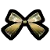

科研者之愿
她才不想做那虚幻飘渺的星，她想要成为光芒。


- 科研者之愿是一种仅【星源】可制作与使用的装备。
- 免疫沙尘暴/月亮风暴
防御30%/90%，耐久630/2520，
保暖0/240，理智值回复（+0/min）/（+6/min），
防水0%/80%，绝缘false/true，力场护盾触发概率0%/30%，移速加成0%/20%
耐久降至0时不消失，
但会立刻掉落至地面并无法装备。
使用【星空修补套件】修补100%耐久。
说明-基础特性：
④可给予以下物品增强此装备的生存向属性。
【猫帽】：60点【保暖】
【冬帽】：60点【保暖】
【兔耳罩】：60点【保暖】
【牛角帽】：60点【保暖】
【贝雷帽】：+6/min【理智值回复】
【雨帽】：80%【防水]，【绝缘】
（以上每种上限给予1次）
⑤可给予以下物品增强此装备的战斗向属性。
【养蜂帽】：5%【防御】
【蜂王冠】：5%【防御】
【饼干切割机帽子】：5%【防御】
【亮茄头盔】：5【位面防御】
【铥矿皇冠】：15%【力场护盾】触发概率
【W.A.R.B.I.S.头戴齿轮】：10%【移速】
（以上每种上限给予2次）
【生物数据】*10：5%【防御】
【D32钢】*1：315点【耐久上限】
（以上每种上限给予6次）
- 保暖装备，推荐初冬前做出。
科研者之愿
astgenne_hat

分类：装备/头部
解锁方式：“真理”
制作材料：
①猫尾*2
②绳子*2
③针线包*1
④飞燕草*2
科研者之愿
（0%耐久时）
astgenne_hat